(点击上方蓝字，可快速关注我们)
来源： Lucida （@peng_gong）
链接：http://zh.lucida.me/blog/on-learning-algorithms/
严格来说，本文题目应该是我的数据结构和算法学习之路，但这个写法实在太绕口——况且CS中的算法往往暗指数据结构和算法（例如算法导论指的实际上是数据结构和算法导论），所以我认为本文题目是合理的。
我这些年学习数据结构和算法的总结。
一些不错的算法书籍和教程。
算法的重要性。
第一次接触数据结构是在大二下学期的数据结构课程。然而这门课程并没有让我入门——当时自己正忙于倒卖各种MP3和耳机，对于这些课程根本就不屑一顾——反正最后考试划个重点也能过，于是这门整个计算机专业本科最重要的课程就被傻逼的我直接忽略过去了。
直到大三我才反应过来以后还要找工作——而且大二的折腾证明了我并没有什么商业才能，以后还是得靠码代码混饭吃，我当时惊恐的发现自己对编程序几乎一无所知，于是我给自己制订了一个类似于建国初期五年计划的读书成长计划，其中包括C语言基础、数据结构以及计算机网络等方面的书籍。
读书计划的第一步是选择书籍，我曾向当时我觉得很牛的”学长”和”大神”请教应该读哪些算法书籍，”学长”们均推荐算法导论，还有几个”大神”推荐计算机程序设计艺术（现在我疑心他们是否翻过这些书），草草的翻了下这两本书发现实在看不懂，但幸运的是我在无意中发现了豆瓣这个神奇的网站，里面有很多质量不错的书评，于是我就把评价很高而且看上去不那么吓人的计算机书籍都买了下来——事实证明豆瓣要比这些”学长”或是”大神”靠谱的多得多。
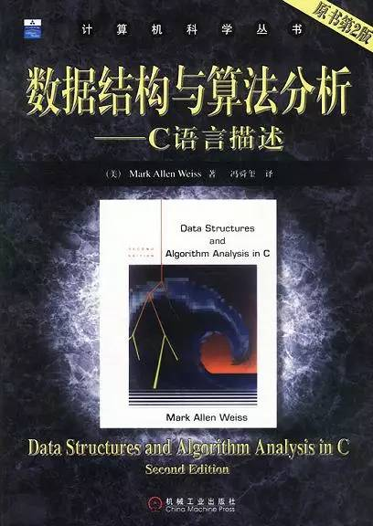
数据结构与算法分析——C语言描述是我学习数据结构的第一本书：当时有很多地方看不懂，于是做记号反复看；代码看不明白，于是抄到本子上反复研读；一些算法想不通，就把它所有的中间状态全画出来然后反复推演。事实证明尽管这种学习方法看起来傻逼而且效率很低，但对于当时同样傻逼的我却效果不错——傻人用傻办法嘛，而且这本书的课后题大多都是经典的面试题目，以至于日后我看到编程之美的第一反应就是这货的题目不全是抄别人的么。
至今记得，这本书为了说明算法是多么重要，在开篇就拿最大子序列和作为例子，一路把复杂度从O(N3)杀到O(N2)再到O(NlgN)最后到O(N)，当时内心真的是景仰之情=如滔滔江水连绵不绝，尼玛为何可以这么屌，
此外，我当时还把这本书里图算法之前的数据结构全手打了一遍，后来找实习还颇为自得的把这件事放到简历里，现在想想真是傻逼无极限。
凭借这个读书成长计划中学到的知识，我总算比较顺利的找到了一份实习工作，这是后话。
我的实习并没有用到什么算法（现在看来就是不停的堆砌已有的API，编写一堆自己都不知道对不对的代码而已），在发现身边的人工作了几年却还在和我做同样的事情之后，我开始越来越不安。尽管当时我对自己没什么规划，但我清楚这绝壁不是我想做的工作。
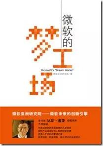
在这个摇摆不定的时刻，微软的梦工场成了压倒骆驼的最后一支稻草，这本书对微软亚洲研究院的描写让我下定了”找工作就要这样的公司”的决心，然而我又悲观的发现无论是以我当时的能力还是文凭，都无法达到微软亚研院的要求，矛盾之下，我彻底推翻了自己”毕业就工作”的想法，辞掉实习，准备考研。
考研的细节无需赘述，但至今仍清楚的记得自己在复试时惊奇且激动的发现北航宿舍对面就是微软西格玛大厦，那种离理想又进了一步的感觉简直爽到爆。
我的研究生生涯绝对是一个反面典型——翘课，实习，写水论文，做水研究，但有一点我颇为自得——从头到尾认真听了韩军教授的算法设计与分析课程。
韩军给我印象最深的有两点：课堂休息时跑到外面和几个学生借火抽烟；讲解算法时的犀利和毫不含糊。
尽管韩军从来没有主动提及，但我敢肯定算法设计与分析基础就是他算法课程事实上的（de-facto）教材，因为他的课程结构几乎和这本书的组织结构一模一样。
如果数据结构与算法分析——C语言描述是我的数据结构启蒙，那么韩军的课程和算法设计与分析基础就是我的算法启蒙，结合课程和书籍，我一一理解并掌握了复杂度分析、分治、减治、变治、动态规划和回溯这些简单但强大的算法工具。
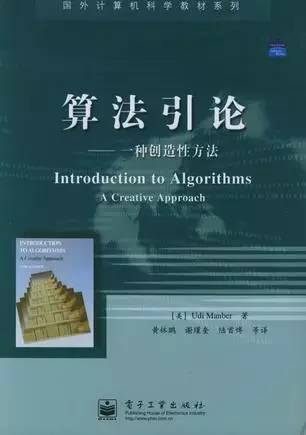
算法引论是我这时无意中读到的另一本算法书，和普通的算法书不同，这本书从创造性的角度出发——如果说算法导论讲的是有哪些算法，那么算法引论讲的就是如何创造算法。结合前面的算法设计与分析基础，这本书把我能解决的算法问题数量扩大了一个数量级。
之后，在机缘巧合下，我进入微软亚洲工程院实习，离理想又近了一步，自我感觉无限牛逼。
在微软工程院的实习是我研究生阶段的一个非常非常非常重要的转折点：
做出了一个还说的过去的小项目。
期间百度实习面试受挫，痛定思痛之下阅读了大量的程序设计书。
微软的实习经历成为了我之后简历上为数不多的亮点之一（本屌一没成绩，二没论文，三没ACM）。
这里就不说1和3了（和本文题目不搭边），重点说说2。
由于当时组内没有特别多的项目，我负责的那一小块又提前搞定了，mentor便很慷慨的扔给我一个Kinect和一部Windows Phone让我研究，研究嘛，自然就没有什么deadline，于是我就很鸡贼的把时间三七开：七分倒腾Windows Phone，三分看书&经典论文。
然而一件事打断了这段安逸的生活——
基友在人人发百度实习内推贴，当时自我感觉牛逼闪闪放光芒，于是就抱着看看国内IT环境+虐虐面试官的变态心理投了简历，结果在第一面就自己的师兄爆出翔：他让我写一个stof（字符串转浮点数），我磨磨唧唧半天也没写出完整实现，之后回到宿舍赶快写了一个版本发到师兄的邮箱，结果对方压根没鸟我。
这件事对我产生了很大的震动——
原来自己连百度实习面试都过不去。
原来自己还是一个编程弱逼。
原来自己还是一个算法菜逼。
痛定思痛，我开始了第二个”五年计划”，三七开的时间分配变成了七三开：七分看书，三分WP。而这一阶段的重点从原理（Principle）变成了实现（Implementation）——Talk is cheap, show me the code.
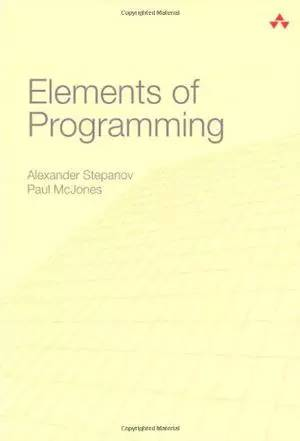
由于一直觉得名字里带”Elements of”的都是酷炫叼炸天的书，所以我几乎是毫不犹豫的买了这本Elements of Programming，事实上这本书里的代码（或者说STL的代码）确实是：快，狠，准，古龙高手三要素全齐。
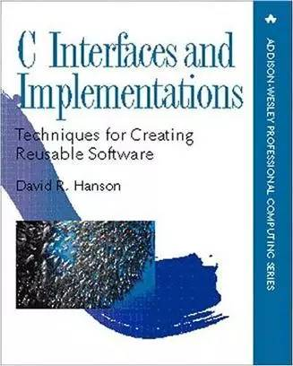
百度面试被爆出翔的经历让我意识到另一个问题，绝大多数公司面试时都需要在纸上写C代码，而我自己却很少用C（多数情况用C#），考虑到自己还没牛逼到能让公司改变面试流程的地步，我需要提升自己编写C代码的能力（哪怕只是为了面试）。一顿Google之后，我锁定了C Interfaces and Implementation——另一本关于如何写出狂炫酷帅叼炸天的C代码的奇书，这里套用下Amazon的评论：Probably the best advanced C book in existance。
严格来说上面两本书都不是传统的算法书，因为它们侧重的都不是算法，而是经典算法的具体实现（Implementation），然而这正是我所需要的：因为算法的原理我能说明白，但要给出优雅正确简练的实现我就傻逼了，哪怕是stof这种简单到爆的”算法”。
依然是以前的傻逼学习方法：反复研读+一遍又一遍的把代码抄写到本子上，艰难的完成了这两本书后，又读了相当数量的编程实践（Programming Practice）书籍，自我感觉编程能力又大幅提升，此外获得新技能——纸上编码。这也成为了我之后找工作面试的三板斧之一。
说老实话，自从本科实习之后，我就一直觉得算法除了面试时能用用，其它基本用不上，甚至还写了一篇当时颇为自得现在读起来极为傻逼的文章来黑那些动不动就”基础”或”内功”的所谓”大牛”们，这里摘取一段现在看起来很傻逼但当时却觉得是真理的文字：
所以那些动则就扯什么算法啊基础啊内功啊所谓的大牛们，请闭上你的嘴，条条大道通罗马。算法并不是编程的前提条件，数学也不会阻碍一个人成为优秀的程序员。至少在我看来，什么算法基础内功都是唬人的玩意，多编点能用的实用的程序才是王道，当然如果你是一个pure theorist的话就当我什么都没说好了。
然而有意思的是，写了这篇文章没多久，鼓吹算法无用论的我自己做的几个大大小小的项目全部用到了算法——我疑心是上天在有意抽我的脸。
我在微软实习的第一个项目做的是代码覆盖率分析——计算T-SQL存储过程的代码覆盖率。
简单的看了下SQL Server相关的文档，我很快发现SQL Reporting Service可以记录T-SQL的执行语句及行号，于是行覆盖（line coverage）搞定，但老大说行覆盖太naive，我们需要更实际的块覆盖（block coverage）。
阅读了块覆盖的定义后，我发现我需要对T-SQL进行语法分析，在没有找到一个好用的T-SQL Parser的情况下，只能自己动手搞一个：
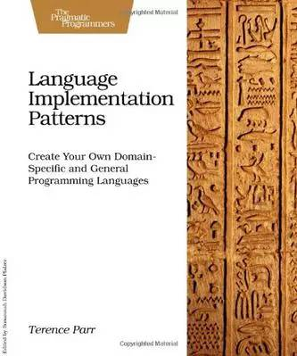
比较奇诡的是，做这个项目时当时我刚好把ANTLR作者的Language Implementation Patterns看了一半，什么LL(k)啊Packrat啊AST Walker的概念啊正热乎着呢。
于是，自己自己就照着T-SQL的官方EBNF，三下五除二撸了一个T-SQL存储过程的LL(k) Parser，把代码转换成AST，然后用一个External AST Walker生成代码块覆盖的HTML报表，全部过程一周不到。
老大自然是很满意——我疑心他的原计划是花两三个月来完成这个项目，因为这个项目之后的两个月我都没什么活干，天天悠哉游哉。
拼音索引是我接的一个手机应用私活里的小模块，用户期待在手机文本框可以根据输入给出智能提示：
比如说输入中国：
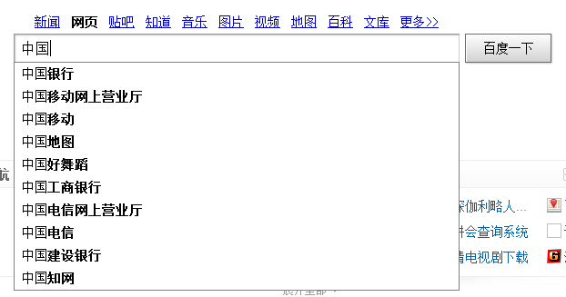
同样，输入拼音也应给出提示：
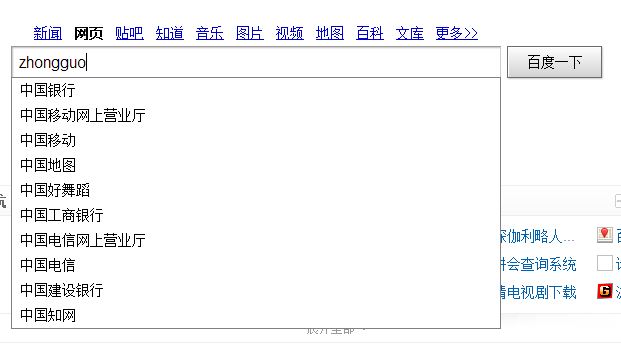
中文匹配这个简单，但拼音匹配就得花时间想想了——懒得造轮子的我第一时间找到了微软的拼音库，但接下来我就发现微软这个鸟库在手机上跑不动，研究了下发现WP7对Dictionary的items数量有限制，貌似是7000还是8000个item就会崩盘，而标准汉字则有两万多个，尼玛。
痛骂MS坑爹+汉字坑爹之余，还是得自己撸一个库出来：
首先把那两万个汉字搞了出来，排序，然后弄成一个超长的字符串。
接下来用Int16索引了汉字所有的拼音（貌似500多个）。
再接下来用Int64建立汉字和拼音的关联——汉字有多音字，所以需要把多个拼音pack到一个Int64里，这个简单，位操作就搞定。
最后用二分+位移Unpack，直接做到从汉字到拼音的检索。
后来小测了下性能，速度是MS原来那个库的五十倍有余，而代码量只有336行。
用户很happy——因为我捎带把他没想到的多音字都搞定了，而且流畅的一逼。
我也很happy，因为没想到自己写的库居然比MS的还要快几十倍，同时小十几倍。
从这个事情之后我变得特别理解那些造轮子的人——你要想想，如果你需要一个飞机轮子但市场上只有自行车轮子而且老板还催着你交工，你能怎么搞。
前面提到在微软实习时老大扔给我一个Windows Phone让我研究下，我当时玩了玩就觉着不太对劲，找联系人太麻烦。
比如说找”张晓明”，WP只支持定位到Z分类下——这意味着我需要在Z分类下的七十多个联系人（姓张的姓赵的姓钟的等等）里面线性寻找，每次我都需要滑动四五秒才能找到这个张姓少年。
这TMD也太傻逼了，本屌三年前的老破NOKIA都支持首字母定位，996->ZXM->张晓明，直接搞定，尼玛一个新时代Windows Phone居然会弱到这个程度。
搜了一下发现没有好用的拨号程序，于是本屌就直接撸了一个支持首字母匹配的拨号程序出来扔到WP论坛里。
结果马上就有各种问题出现——最主要的反映是速度太慢，一些用户甚至反馈按键有时要半秒才有反应。本屌问了下他的通讯录大小：大概3000多人。
吐槽怎么会有这么奇葩的通讯录之余，我意识到自己的字符串匹配算法存在严重的性能问题：读取所有人的姓名计算出拼音，然后一个个的匹配——结果如果联系人数量太多的话，速度必然拙计。
于是我就开始苦思冥想有没有一个能够同时搜索多个字符串的高端算法，以至于那两天坐地铁都在嘟囔怎么才能把这个应用搞的快一些。
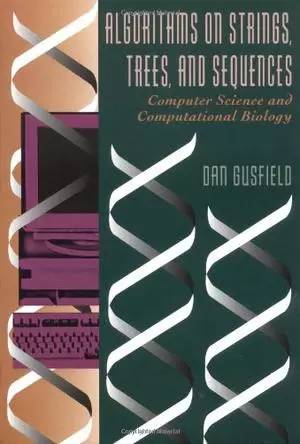
最终还是在Algorithms on Strings, Trees and Sequences里找到了答案——确实有能够同时搜索多个字符串的方法：Tries，而且这本书还用足足一章来讲怎么弄Multiple string comparison，看得我当时高潮迭起，直呼过瘾。
具体细节不多说，总之换了算法之后，匹配速度快了大约九十多倍，而且代码还短了几十行。哪怕是有10000个联系人，也能在0.1秒内搞定，速度瓶颈就这样愉快的被算法搞定。
之后又做了若干个项目，多多少少都用到了”自制”的算法或数据结构，最奇诡的一次是写一个电子书阅读器里的分页，我照着模拟退火（Simulated Annealing）的原理写了一个快速分页算法，事实上这个算法确实很快——但问题是我都不知道为啥它会这么快。
总之，算法是一种将有限计算资源发挥到极致的武器，当计算资源很富余时算法确实没大用，但一旦到了效率瓶颈算法绝壁是开山第一刀（因为算法不要钱嘛！要不还得换CPU买SSD升级RAM，肉疼啊！！）。一些人会认为这种说法是有问题，因为编写新算法的人力成本有时比增加硬件的成本还要高——但别忘了增加硬件提升效率也是建立在算法是Scalable的基础上——说白了还是得撸算法。
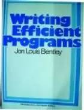
说到优化这里顺带提一下Writing Efficient Programs——很难找到一本讲代码优化的书（我疑心是自从Knuth说了过早优化是万恶之源之后没人敢写，万恶之源嘛，写它干毛），注意这本书讲的是代码优化——在不改变架构、算法以及硬件的前提之下进行的优化。尽管书中的一些诸如变量复用或是循环展开的trick已经过时，但总体仍不失为一本好书。
实习实习着就到了研二暑假，接下来就是求职季。
求职季时我有一种莫名的复仇感——尼玛之前百度实习面试老子被你们黑的漫天飞翔，这回求职老子要把你们一个个黑回来，尼玛。
现在回想当时的心理实属傻逼+幼稚，但这种黑暗心理也起了一定的积极作用：我丝毫不敢有任何怠慢，以至于在5月份底我就开始准备求职笔试面试，比身边的同学早了两个月不止。
我没有像身边的同学那般刷题——而是继续看书抄代码学算法，因为我认为那些难得离谱的题面试官也不会问——事实上也是如此。
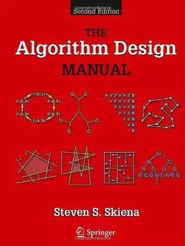
因为很多Coding Interview的论坛都提到这本红皮书，我也跟风搞了一本。事实证明，仅仅是关于Backtrack Template那部分的描述就足以值回书价，更不用说它的Heuristics和课后题。
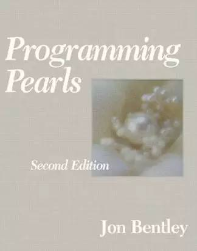
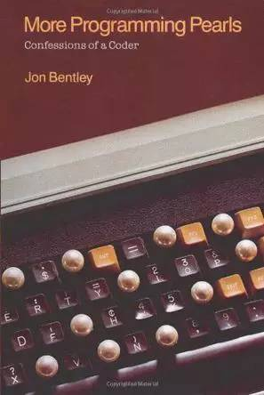
这两本书就不用多介绍，编程珠玑和更多的编程珠玑，没听说过这两本书请自行面壁。前者偏算法理论，后者偏算法轶事，前者提升能力，后者增长谈资，都值得一读。
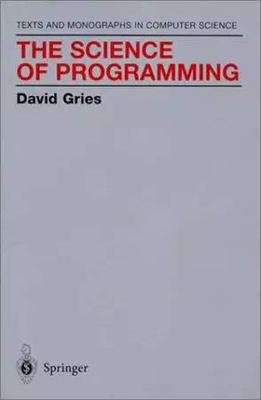
读到编程珠玑里面关于Binary Search的正确性证明时我大呼过瘾，原来程序的正确性也是可以推导的，然后我就在那一章的引用里发现David Gries的The Science of Programming。看名字就觉得很厉害，直接搞了一本开撸。
不愧为编程珠玑引用的书籍，撸完The Science of Programming之后，本屌获得了证明简单代码段的正确性这个技能——求职面试三板斧之二。
证明简单代码段的正确性是一个很神奇的技能——因为面试时大多数公司都会要求在纸上写一段代码，然后面试官检查这段代码，如果你能够自己证明自己写的代码是正确的，面试官还能挑剔什么呢？
之后就是各种面试，详情见之前的博客，总之就是项目经历、纸上代码加正确性证明这三板斧，摧枯拉朽。
求职毕业季之后就是各种Happy，Happy过后本屌发现即将面临另一个问题：算法能力不足。
因为据说以后的同事大多是ACM选手，而本屌从来没搞过算法竞赛，而且知道的算法和数据结构都极为基础：像那些元胞自动机、斐波那契堆或是线段树这些高端数据结构压根只是能把它们的英文名称拼写出来，连用都没用过，所以心理忐忑的一逼。
为了不至于到时入职被鄙视的太惨烈，加上自己一贯的算法自卑症，本屌强制自己再次学习算法：
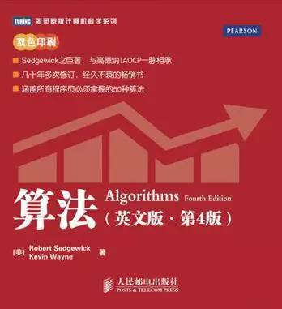
Algorithms是我重温算法的第一本书，尽管它实际就是一本数据结构的入门书，但它确实适合当时已经快把算法忘光的本屌——不为学习，只为重温。
这本书最大的亮点在于它把Visualization和Formatting做到了极致——也许它不是最好的数据结构入门书，但它绝壁是我读过的排版最好的书，阅读体验爽的一逼；当然这本书的内容也不错，尤其是红黑树那一部分，我想不会有什么书会比此书讲的更明白。
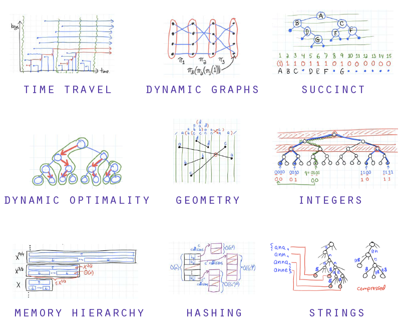
Advanced Data Structures是MIT的高级数据结构教程，为什么会找到这个教程呢？因为GoogleAdvanced Data Structures第一个出来的就是这货。
这门课包含各种让本屌世界观崩坏的奇诡数据结构和算法，它们包括但不限于：
带”记忆”的数据结构（Data Structure with Persistence）。
van Emde Boas（逆天的插入，删除，前驱和后继时间复杂度）。
o(1)时间复杂度的的LCA、RMQ和LA解法。
奇幻的o(n)时间复杂度的Suffix Tree构建方法。
o(lglgn)的BST。
…
总之高潮迭起，分分高能，唯一的不足就是没有把它们实现一圈。以后本屌一定找时间把它们一个个撸一遍。
从接触算法到现在，大概七年：初学时推崇算法牛逼论，实习后鼓吹算法无用论，读研后再被现实打回算法牛逼论。
怎么这么像辩证法里的肯定到否定再到否定之否定。
现在来看，相当数量的鼓吹算法牛逼论的人其实不懂算法的重要性——如果你连用算法解决实际问题的经历都没有，那你如何可以证明算法很有用？而绝大多数鼓吹算法无用论的人不过是低水平码农的无病呻吟——他们从未碰到过需要用算法解决的难题，自然不知道算法有多重要。
Peter Norvig曾经写过一篇非常精彩的SICP书评，我认为这里把SICP换成算法依然适用：
To use an analogy, if algorithms were about automobiles, it would be for the person who wants to know how cars work, how they are built, and how one might design fuel-efficient, safe, reliable vehicles for the 21st century. The people who hate algorithms are the ones who just want to know how to drive their car on the highway, just like everyone else.
MIT教授Erik Demaine则更为直接：
If you want to become a good programmer, you can spend 10 years programming, or spend 2 years programming and learning algorithms.
总而言之，如果你想成为一个码农或是熟练工（Code Monkey），你大可以不学算法，因为算法对你确实没有用；但如果你想成为一个优秀的开发者（Developer），扎实的算法必不可少，因为你会不断的掉进一些只能借助算法才能爬出去的坑里。
以上。
（完）
【今日微信公号推荐↓】
![]()